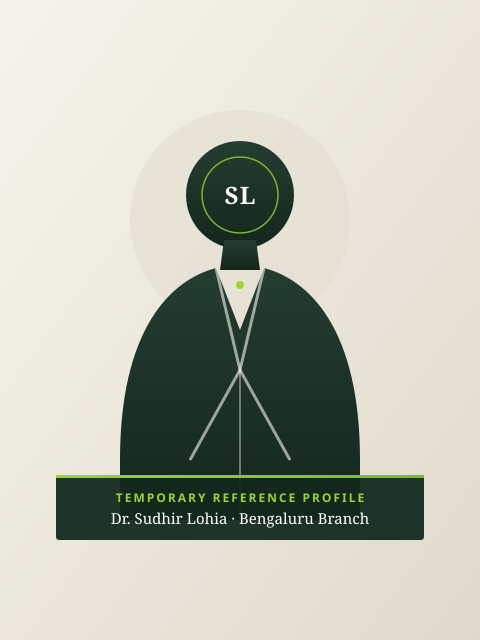

Three decades of dedicated homeopathic care.
Lohia's Homoeopathy is an established clinical consulting practice serving patients through classical homeopathic principles, structured consultation, and tailored healthcare guidance.


A journey of care since 1992.
Founded with the conviction that effective healthcare begins with listening, Lohia's Homoeopathy has served patients continuously for over 30 years.
Rather than brief, symptom-based interactions, our clinical practice emphasizes thorough case-taking. We evaluate physical symptoms, constitutional tendencies, lifestyle circumstances, and emotional factors to understand the complete individual.
Today, our practice operates dedicated clinical branches in Bengaluru (Karnataka) and Akola (Maharashtra), maintaining a unified commitment to patient attention, calm environments, and responsible clinical standards.
Meet the Doctors
Qualified homeopathic consultants dedicated to individualized attention and thoughtful care.

Dr. Sudhir Lohia
Homoeopath & Health Care Consultant
Profile Reference · Since 1992Leading the Bengaluru clinical practice, Dr. Sudhir Lohia has been practicing classical homeopathy since 1992. He brings over three decades of clinical experience in individual constitutional evaluation, long-term case management, and healthcare guidance.

Dr. Chaitanya Arvindkumar Murti
Consulting Homoeopath · Akola Branch
Consulting DoctorConsulting at the Akola clinic, Dr. Chaitanya Arvindkumar Murti conducts thorough in-person case-taking, symptom modality analysis, and structured follow-up evaluations for patients across Maharashtra and surrounding regions.
Our Patient-Focused Approach
We believe responsive healthcare is built on patience, thoroughness, and transparent communication.
Personalised Consultation
In classical homeopathy, every patient exhibits distinct symptom modalities. We review symptom sensations, onset factors, thermal tolerances, and lifestyle patterns to evaluate your constitutional profile.
Understanding Patient Concerns
Physical complaints rarely exist in isolation. Our doctors provide unhurried space to discuss emotional stresses, sleep variations, dietary patterns, and how daily pressures affect your well-being.
Individual Attention
Because appointments are scheduled with dedicated time slots, you are never subjected to rushed consultations. Our doctors take comprehensive notes to track your progress over time.
Healthcare Guidance
We view consultation as a partnership. In addition to tailored homeopathic prescriptions, we provide practical healthcare suggestions regarding routine, nutrition, rest, and wellness habits.
Consultation Availability
Whether you visit our physical clinics in Bengaluru or Akola, or coordinate remotely when traveling, our structured appointment system ensures continuity of care throughout your treatment.
Dedicated Clinical Dispensary
Lohia's Homoeopathy is a dedicated clinical healthcare practice. All remedies are prepared and dispensed exclusively as part of clinical consultation for patients under registered care.
What to expect during your consultation.
An initial homeopathic consultation differs substantially from a typical brief visit.
1. In-Depth History Review
We explore your primary health concerns, past medical history, family tendencies, and when symptoms first appeared.
2. Constitutional Analysis
We assess your general physical traits—reactions to weather, energy cycles, food preferences, and sleep rhythms.
3. Prescribing & Direction
Following case analysis, individualized remedies and clear written instructions are provided alongside follow-up scheduling.

Ethical, Attentive Medical Practice
How we uphold patient trust and clinical integrity every day.
Individualized Assessment
We do not practice one-size-fits-all treatments. Each prescription is personalized according to the patient's specific constitutional characteristics.
Unhurried Sessions
Every consultation is scheduled with adequate time to ensure you can express all physical, mental, and lifestyle factors comfortably.
Strictly By Appointment
Patients are seen by prior appointment only, ensuring a calm, professional clinic environment without crowded waiting rooms.